31 Plotting continuous data
For appropriate plotting of continuous data, e.g. age, clinical measurements, distance, etc.
31.1 Overview
As usual, R has built-in functions for quick visualisations. You can opt to install additional packages with more functionality - this is often recommended for presentation-ready visualisations. Specifically, you can use:
- the
boxplot()function from the graphics package (installed automatically with base R) - the
ggplot()function from the ggplot2 package, or
Visualisations covered here include:
-
Plots for one continuous variable:
- Box plots (also called box and whisker), in which the box represents the 25th, 50th, and 75th percentile of a continuous variable, and the line outside of this represent tail ends of distribution of the the continuous variable, and dots represent outliers.
- Violin plots, which are similar to histograms in that they show the distribution of a continuous variable based on the symettrical width of the ‘violin’.
- Jitter plots, which visualise the distribution of a continuous variable by showing all values as dots, rather than collectively as one larger shape. Each dot is ‘jittered’ so that they can all (mostly) be seen, even where two have the same value.
Scatter plots for two continuous variables.
## Warning: Removed 88 rows containing non-finite values (stat_boxplot).## Warning: Removed 88 rows containing non-finite values (stat_ydensity).## Warning: Removed 88 rows containing missing values (geom_point).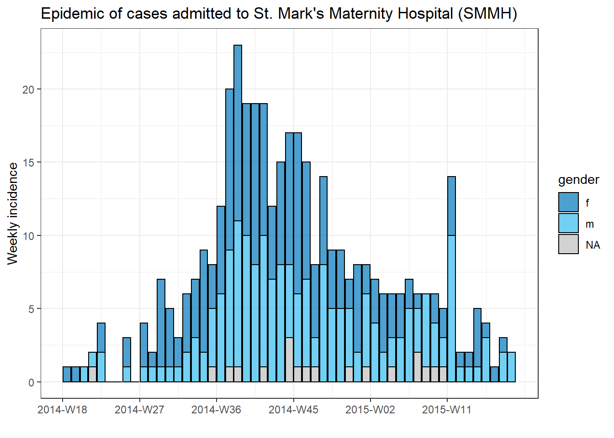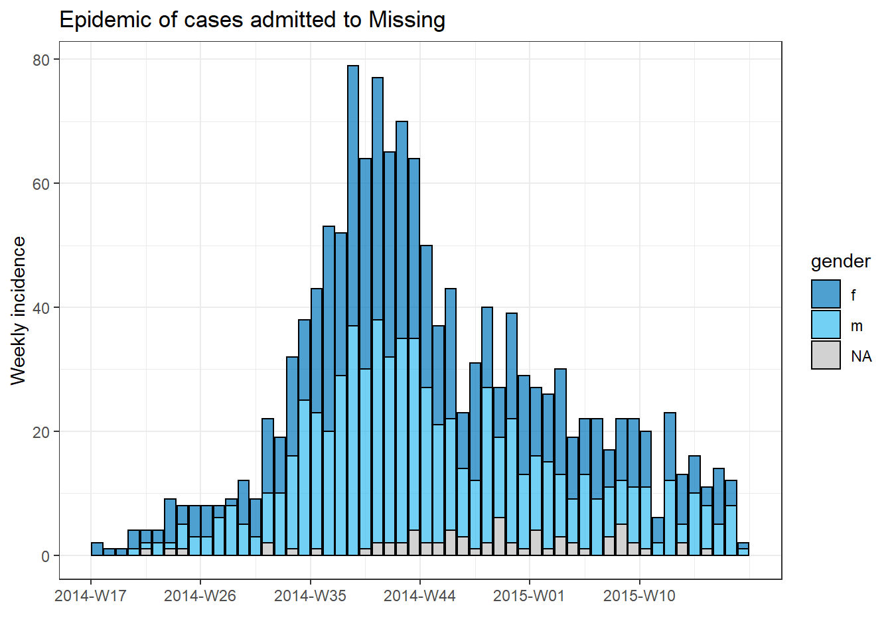 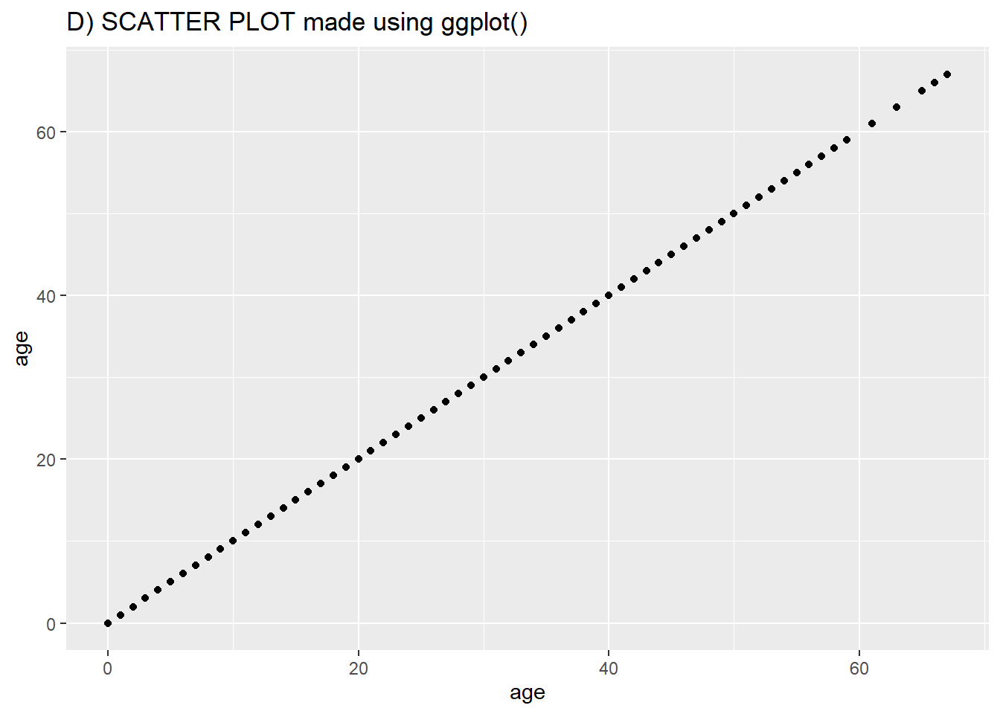
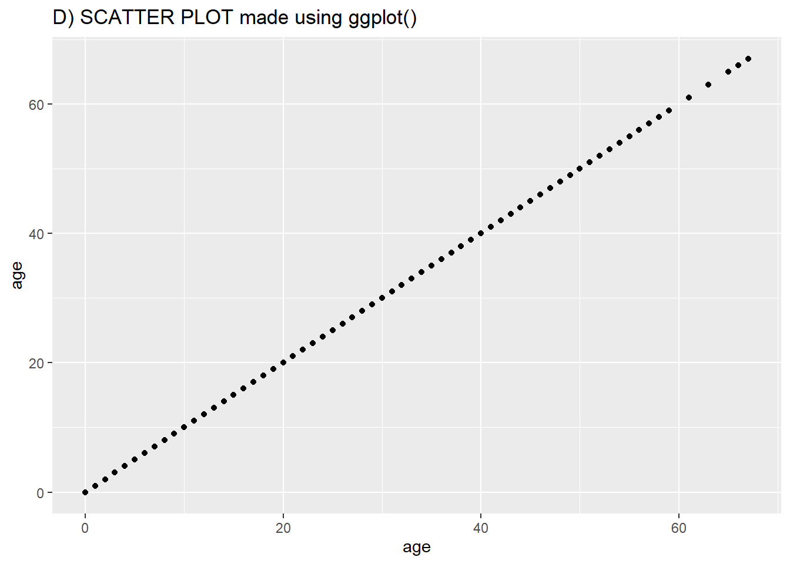
31.2 Preparation
Preparation includes ensuring you have the correct packages, (install.packages("ggplot2") if needed), and ensuring your data is the correct class and format.
Convert character outcomes to numeric as needed:
linelist <- linelist %>%
mutate(age = as.numeric(age))31.3 Plotting with base graphics
Plotting one continuous variable
The in-built graphics package comes with the boxplot() function, allowing straight-forward visualisation of a continuous variable for the whole dataset (A below) or within different groups (B and C below). Note how with C, outcome and gender are written as outcome*gender such that the boxplots are for the four combinations of the two columns.
# For total population
graphics::boxplot(linelist$age,
main = "A) One boxplot() for total dataset") # Plot title
# By subgroup
graphics::boxplot(age ~ outcome*gender,
data = linelist, # Here 'data' is specified so no need to write 'linelist$age' in line above.
main = "B) boxplot() by subgroup")
# By crossed subgroups
graphics::boxplot(age ~ outcome*gender,
data = linelist, # Here 'data' is specified so no need to write 'linelist$age' in line above.
main = "C) boxplot() by crossed groups")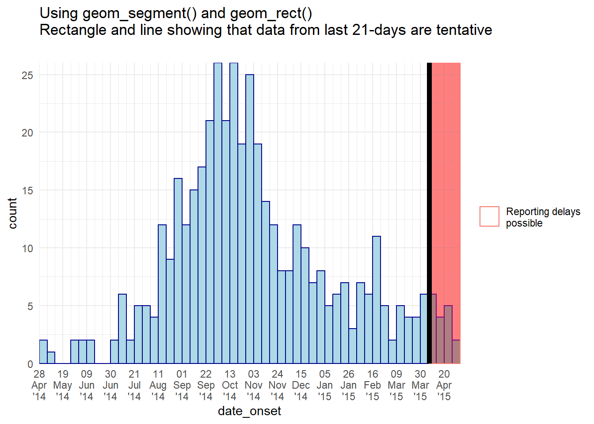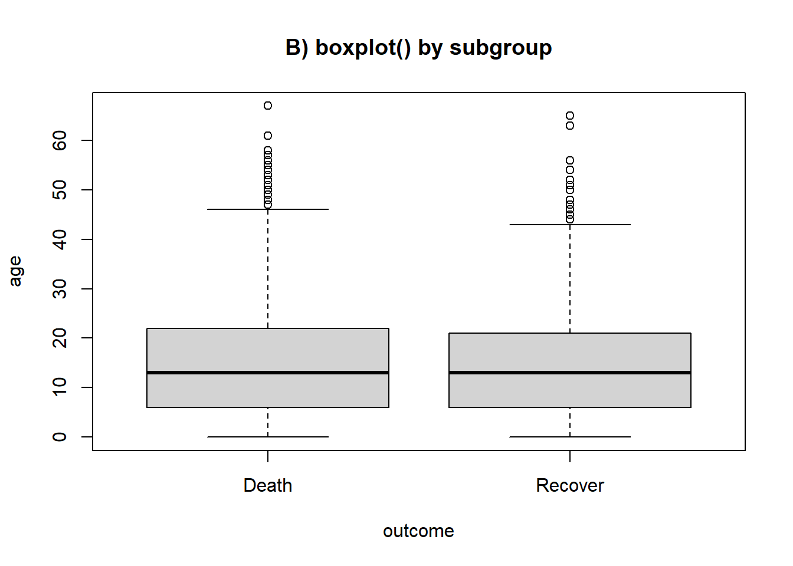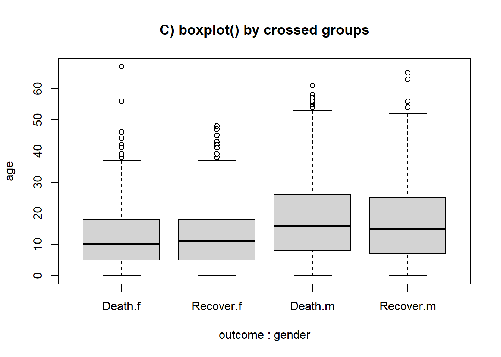
Some further options with boxplot() shown below are:
- Boxplot width proportional to sample size (A)
- violin plots, with notched representing the median and x around it (B; TO DO)
- Horizontal (C)
# Varying width by sample size
graphics::boxplot(linelist$age ~ linelist$outcome,
varwidth = TRUE, # width varying by sample size
main="A) Proportional boxplot() widths")
# Notched (violin plot), and varying width
boxplot(age ~ outcome,
data=linelist,
notch=TRUE, # notch at median
main="B) Notched boxplot()",
col=(c("gold","darkgreen")),
xlab="Suppliment and Dose")
# Horizontal
boxplot(age ~ outcome,
data=linelist,
horizontal=TRUE, # flip to horizontal
col=(c("gold","darkgreen")),
main="C) Horizontal boxplot()",
xlab="Suppliment and Dose")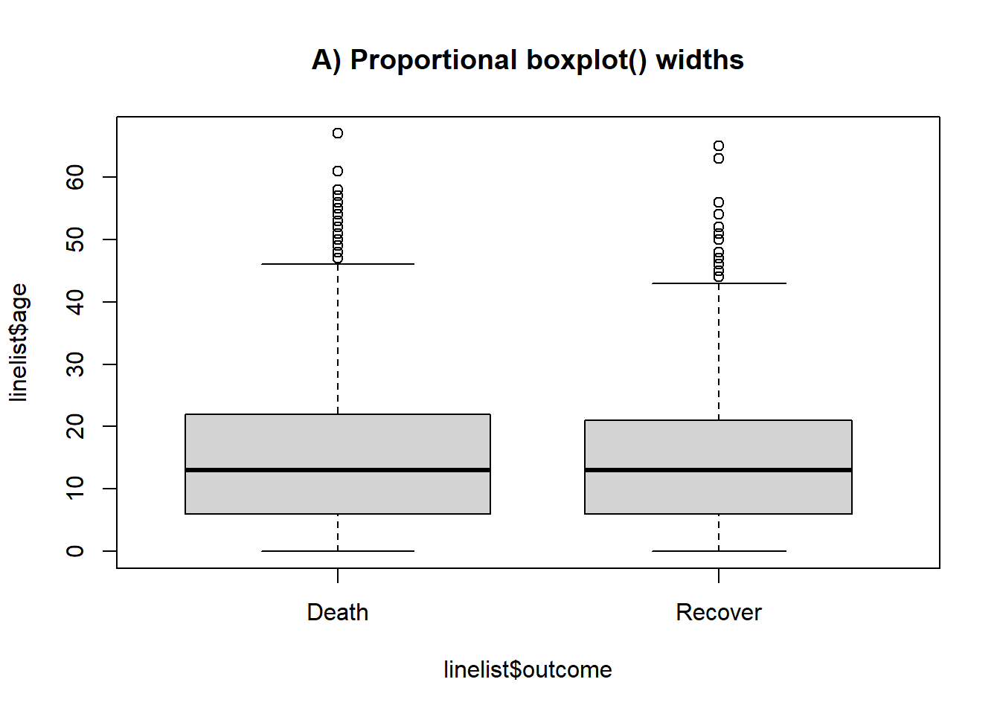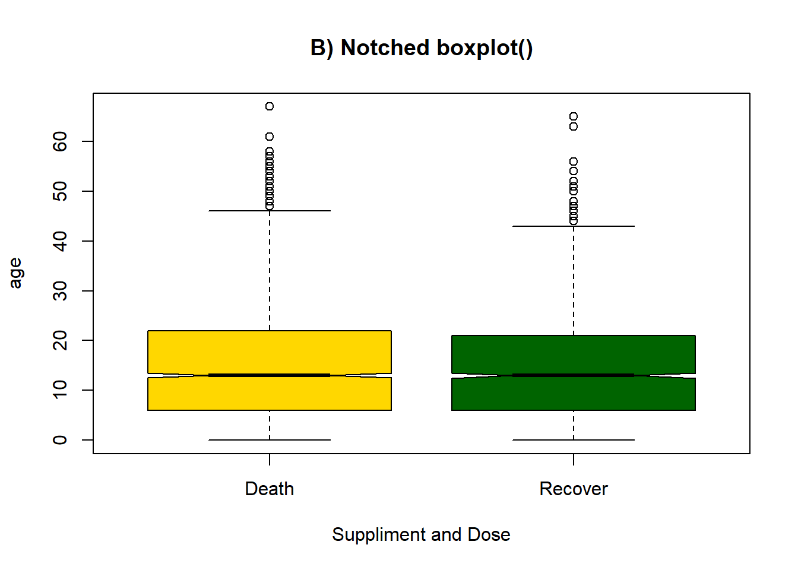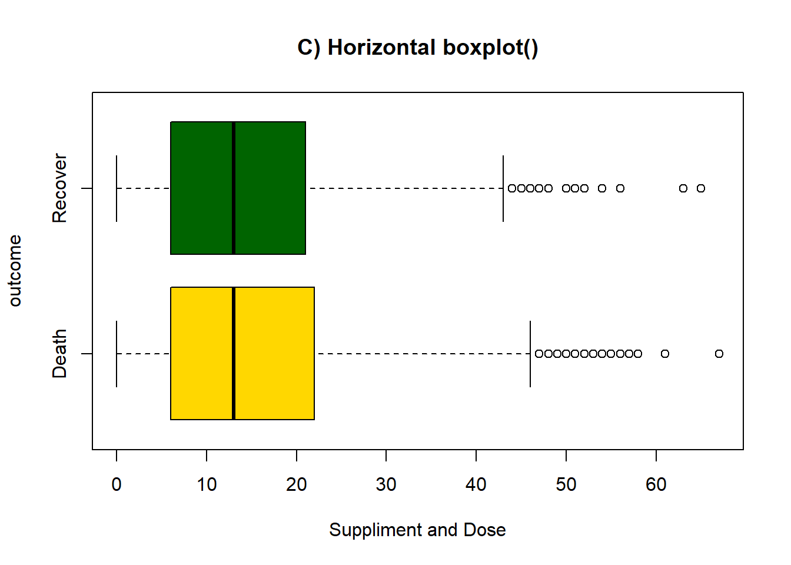
Plotting two continuous variables
Scatter plots are helpful for visualising the correlation between two continuous variables.
Using base R, they can simple be visualisation with the plot function.
plot(linelist$age)31.4 Plotting with ggplot
Code syntax
Ggplot has extensive functionality, and the same code syntax can be used for many different plot types.
A basic breakdown of the ggplot code is as follows:
ggplot(data = linelist,
aes(x = col1, y = col2),
fill = "color")+
geom_boxplot() -
ggplot()starts off the function. You can specify the data and aesthetics (see next point) within the ggplot bracket, unless you are combining different data sources or plot types into one -
aes()stands for ‘aesthetics’, and is where the columns used for the visualisation are specified. For instanceaes(x = col1, y = col2)to specify the data used for the x and y values (where y is the continuous variable in these examples). -
fillspecifies the colour of the boxplot areas. One could also writecolorto specify outline or point colour. -
geom_XXXspecifies what type of plot. Options include:-
geom_boxplot()for a boxplot -
geom_violin()for a violin plot -
geom_jitter()for a jitter plot -
geom_point()for a scatter plot
-
For more see section on ggplot tips).
Plotting one continuous variable
Below is code for creating box plots, for an entire dataset and by sub group. Note that for the subgroup breakdowns, the ‘NA’ values are also removed using dplyr, otherwise ggplot plots the age distribution for ‘NA’ as a separate boxplot.
# A) Simple boxplot of one numeric variable
ggplot(data = linelist, aes(y = age))+ # only y variable given (no x variable)
geom_boxplot()+
ggtitle("A) Simple ggplot() boxplot")## Warning: Removed 88 rows containing non-finite values (stat_boxplot).
# B) Box plot by group
ggplot(data = linelist %>% filter(!is.na(outcome)),
aes(y = age, # numeric variable
x = outcome)) + # group variable
geom_boxplot(fill = "gold")+ # create the boxplot and specify colour
ggtitle("B) ggplot() boxplot by gender") # main title## Warning: Removed 61 rows containing non-finite values (stat_boxplot).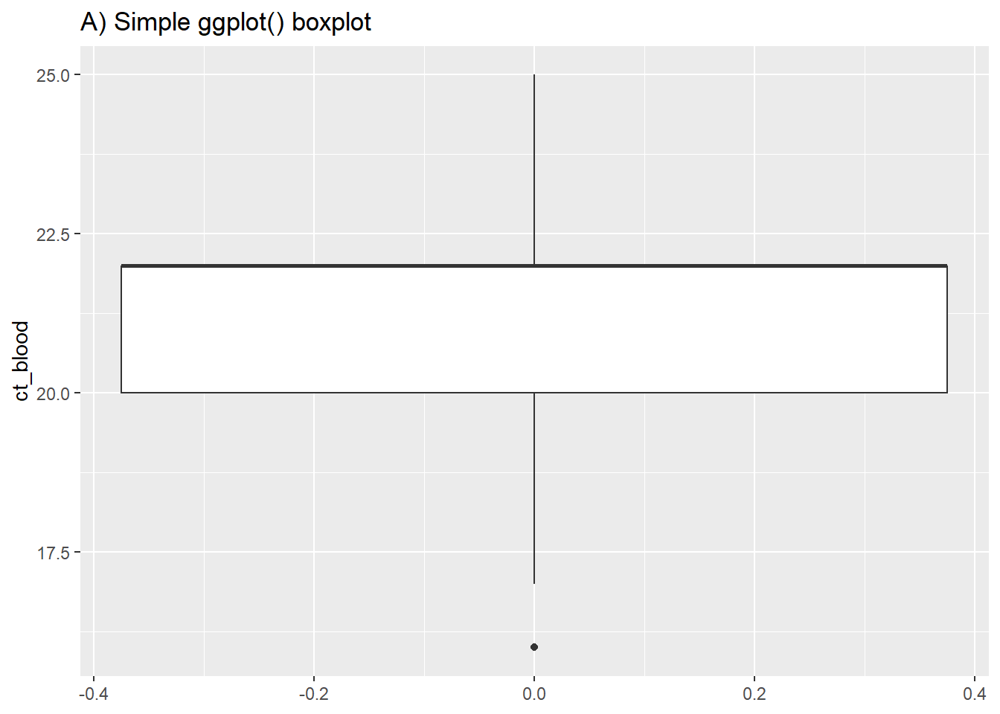
Below is code for creating violin plots (geom_violin) and jitter plots (geom_jitter). One can specify that the ‘fill’ or ’color’is also determined by the data, thereby inserting these options within the aes bracket.
# A) Violin plot by group
ggplot(data = linelist %>% filter(!is.na(outcome)),
aes(y = age, # numeric variable
x = outcome, # group variable
fill = outcome))+ # fill variable (color of boxes)
geom_violin()+ # create the violin plot
ggtitle("A) ggplot() violin plot by gender") # main title## Warning: Removed 61 rows containing non-finite values (stat_ydensity).
# B) Jitter plot by group
ggplot(data = linelist %>% filter(!is.na(outcome)),
aes(y = age, # numeric variable
x = outcome, # group variable
color = outcome))+ # Color variable
geom_jitter()+ # create the violin plot
ggtitle("B) ggplot() violin plot by gender") # main title## Warning: Removed 61 rows containing missing values (geom_point). 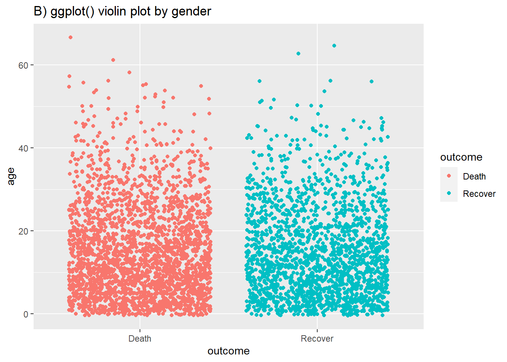
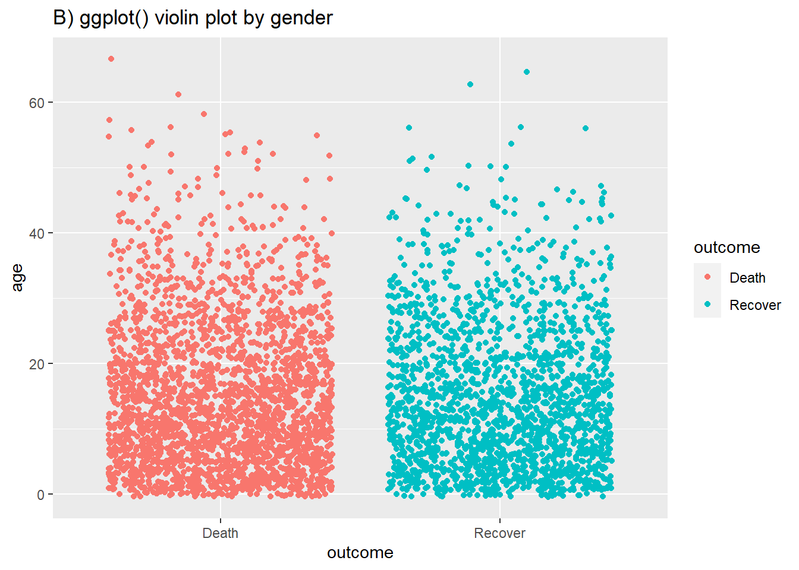
To examine further subgroups, one can ‘facet’ the graph. This means the plot will be recreased within specified subgroups. One can use:
-
facet_wrap()- this will recreate the sub-graphs and present them alphabetically (typically, unless stated otherwise). You can invoke certain options to determine the look of the facets, e.g.nrow=1orncol=1to control the number of rows or columns that the faceted plots are arranged within. See plot A below. -
facet_grid()- this is suited to seeing subgroups for particular combinations of discrete variables. See plot B below.
# A) Facet by one variable
ggplot(data = linelist %>% filter(!is.na(gender) & !is.na(outcome)), # filter retains non-missing gender/outcome
aes(y = age, x = outcome, fill=outcome))+
geom_boxplot()+
ggtitle("A) A ggplot() boxplot by gender and outcome")+
facet_wrap(~gender, nrow = 1)
# B) Facet across two variables
ggplot(data = linelist %>% filter(!is.na(gender) & !is.na(outcome)), # filter retains non-missing gender/outcome
aes(y = age))+
geom_boxplot()+
ggtitle("A) A ggplot() boxplot by gender and outcome")+
facet_grid(outcome~gender)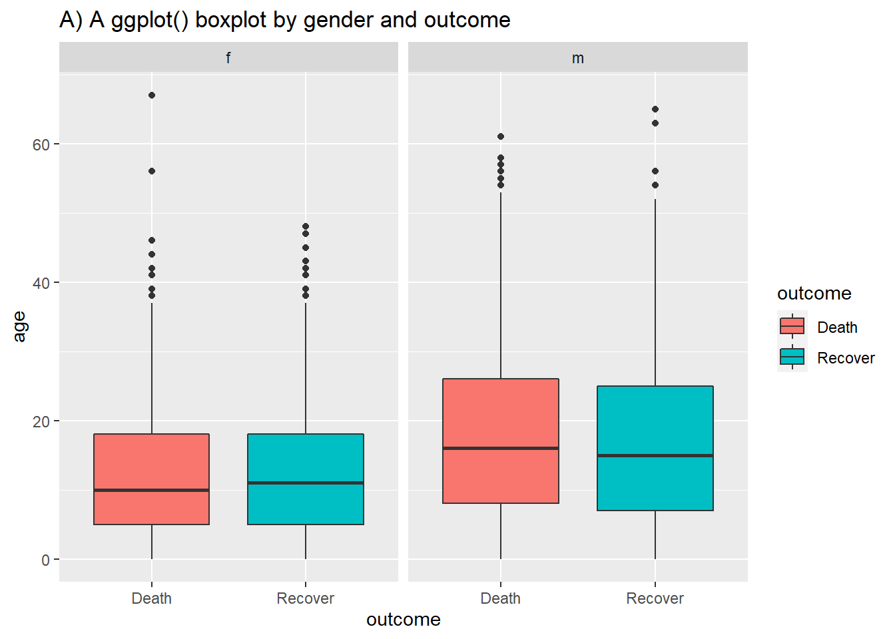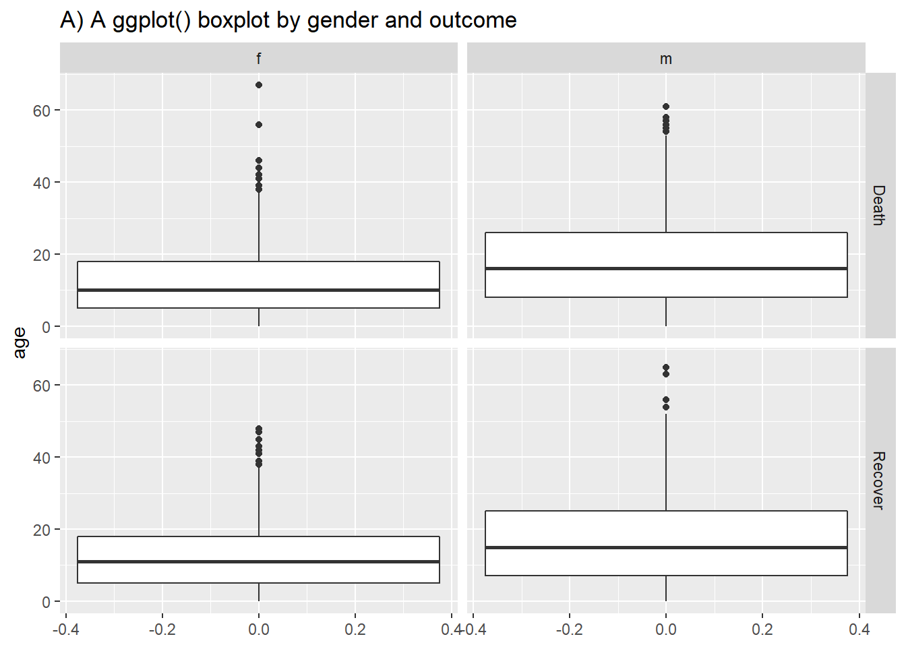
To turn the plot horizontal, flip the coordinates with coord_flip.
# By subgroup
ggplot(data = linelist %>% filter(!is.na(gender) & !is.na(outcome)), # filter retains non-missing gender/outcome
aes(y = age, x = outcome, fill=outcome))+
geom_boxplot()+
ggtitle("B) A horizontal ggplot() boxplot by gender and outcome")+
facet_wrap(gender~., ncol=1) +
coord_flip()Plotting two continuous variables
Following similar syntax, geom_point will allow one to plot two continuous variables against eachother in a scatter plot. Here we again use facet_grid to show the interaction between two different discrete variables.
# By subgroup
ggplot(data = linelist %>% filter(!is.na(gender) & !is.na(outcome)), # filter retains non-missing gender/outcome
aes(y = age, x = age))+
geom_point()+
ggtitle("A horizontal ggplot() boxplot by gender and outcome")+
facet_grid(gender~outcome)